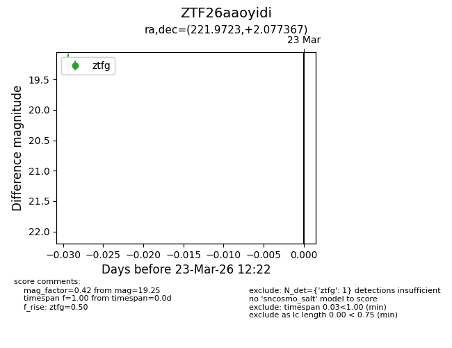
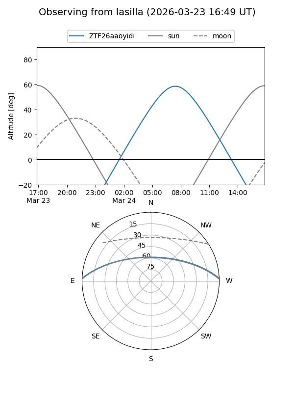
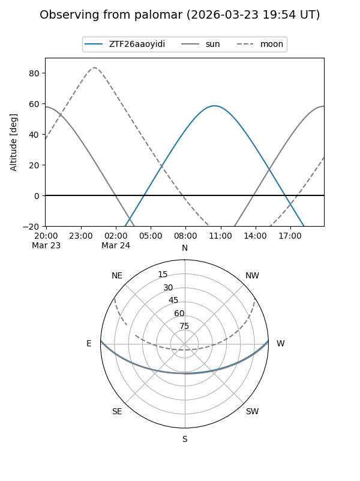

ZTF26aaoyidi
Target ZTF26aaoyidi at 2026-03-23 12:24
Aliases and brokers:
FINK: link
Lasair: link
ALeRCE: link
alt names
ZTF26aaoyidi (ztf,fink_ztf)
Coordinates:
equatorial (ra, dec) = 221.9723,+2.07737
equatorial (HMS+DMS) = 14:47:53.36,+02:04:38.52
galactic (l, b) = (355.9720,+52.52018)
Flags:
Photometry:
last ztfg=19.25
1 ztfg detections
Lightcurve

Visibility


Additional plots